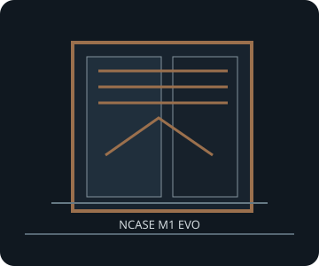

[ M1 EVO // MODULAR MINI-ITX PLATFORM ]
NCASE M1 EVO
160 × 256 × 366 mm, about 14.99 L; modular Mini-ITX/Mini-DTX/Micro-ATX chassis with orientation-specific GPU, cooler and radiator layouts.

FITMENT CAVEAT: This record describes the named model only. Published maxima can depend on revision, brackets, fan/radiator position, PSU cable routing and drive configuration; verify the exact manual and parts before purchase or assembly.
Specifications & fit
| Exact model | NCASE M1 EVO |
|---|---|
| Motherboard sizes | Mini-ITX (170 × 170 mm), Mini-DTX, Micro-ATX and Deep-ITX; check the exact board outline and tray/vertical GPU configuration in the matching M1 EVO manual revision. |
| PSU type and fit | SFX and SFX-L; ATX requires the optional mounting kit. With an ATX PSU and GPU longer than 270 mm, PSU depth is restricted to about 140 mm; verify manual configuration before choosing the supply. |
| GPU length and thickness | Horizontal/flipped layouts: up to 359 mm long, 142 mm wide/high and four slots. Vertical GPU layout: up to 359 × 165 mm and four slots. These are different assemblies; the vertical layout reduces CPU-cooler height. |
| CPU cooler height | Up to 135 mm in standard/flipped GPU layouts (depending on card thickness); up to 50 mm with vertical GPU configuration. |
| Radiator and fan options | Supports 120/140 mm fans and 240/280 mm radiators in documented locations; simultaneous dual-radiator layouts (including 2 × 240/280 mm) require the appropriate configuration/kit. Maximum fan count and radiator thickness depend on board, PSU and GPU orientation. |
| Storage clearances | Up to nine 2.5-inch drives or three 3.5-inch drives using the supported brackets; accessory configurations may vary. Drive brackets consume radiator/fan space, so use the manual's selected layout rather than summing all advertised maxima. |
| Compatibility notes | The M1 EVO has multiple modes and accessory-dependent configurations. Record the exact M1EVO-A/R/MC-SDK model and manual version; GPU orientation changes available CPU-cooler height and PSU/radiator compatibility. |
Compatibility & preservation notes
The M1 EVO has multiple modes and accessory-dependent configurations. Record the exact M1EVO-A/R/MC-SDK model and manual version; GPU orientation changes available CPU-cooler height and PSU/radiator compatibility.
- Record the case model/SKU, revision, included riser, brackets and manual version before changing hardware.
- Measure the actual GPU shroud, power connectors, cooler, radiator/fan stack and cable bend radii; do not assume listed maxima can coexist.
- Keep original drive trays, standoffs, fasteners, fan brackets and panel hardware with the enclosure.
Manufacturer sources
- NCASE — M1 EVO specificationsManufacturer configuration matrix for motherboard, PSU, card, cooling and storage.
- NCASE — user manualsManufacturer M1 EVO V1.0/V1.1 build manual and revision-specific assembly diagrams.
Sources are manufacturer product documentation and the model-specific manual; consult the matching revision for assembly dimensions.